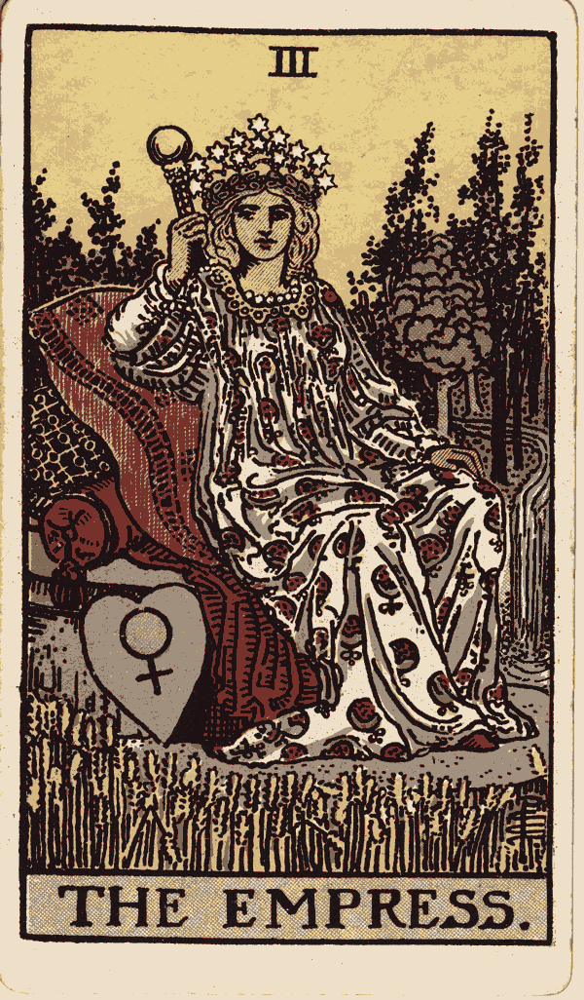

Abandoned "sculpt from prompt" approach. Pivoted to: download Pamela Colman Smith's 1910 Rider-Waite-Smith Empress (public domain, Wikimedia Commons) → quantize to 8 colors → VTracer polygon-to-spline → 806 KB flat-vector SVG. No agent invented any illustration; we vectorized a century-old masterpiece.
v3 failed: "still looks bald" — sculpt-from-prompt hit its ceiling after three iterations.
v4 approach: source the illustration (master illustrator, 1910), don't invent it. Vectorize the raster. Optional later: remap to Mystic Cartography gold-on-navy palette via color substitution.
Evolution
v3 · hair pass bald17 KB · 66 paths
source · RWS 1910 JPG 927 KB · 1123×1920 · PD

quantized · 8 colors PNG 275 KB · 600×1025
v4 · vectorized SVG new806 KB · flat vector
What's next if this lands
Color remap to Olivia Mystic Cartography palette (gold on navy) — replace RWS reds/greens/flesh with #1a0f2e / #d4a574 / #5a1f33. Done via regex sweep over the fill attrs. ~10 min.
Repeat for remaining 77 Major + Minor Arcana — Pamela Colman Smith did the full deck; all 78 are public-domain on Wikimedia. Batch script vectorizes all overnight.
Replace the sculpt-from-prompt workflow for all tarot card illustration in brain/SVG Protocol.md. Glyphs remain sculpted (they work — see Taurus); figure illustrations pivot to vectorize-from-PD.